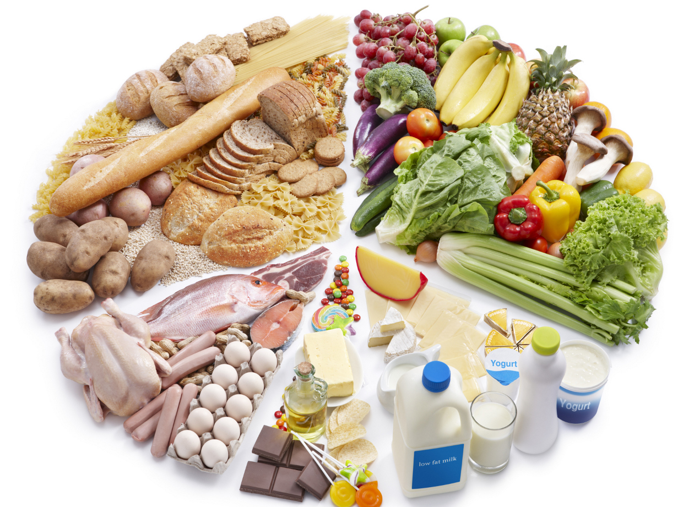
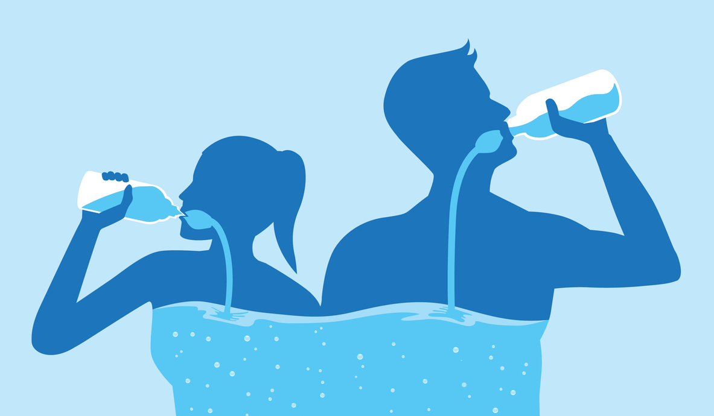
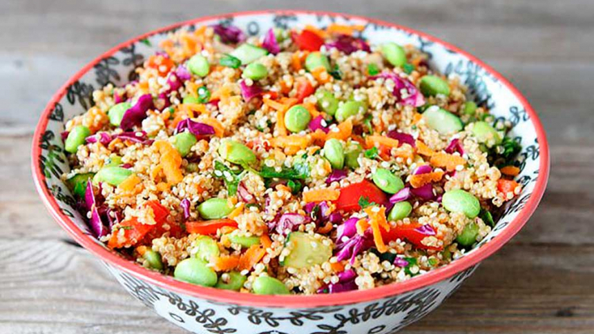
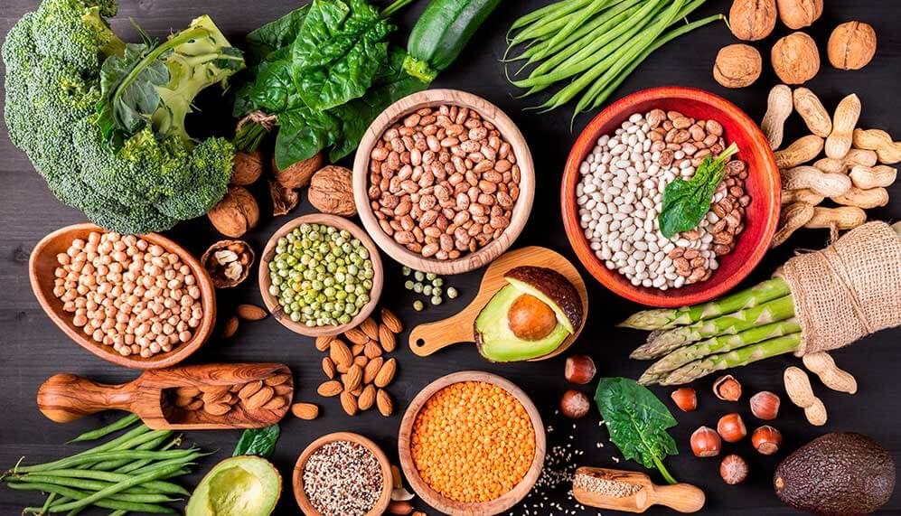
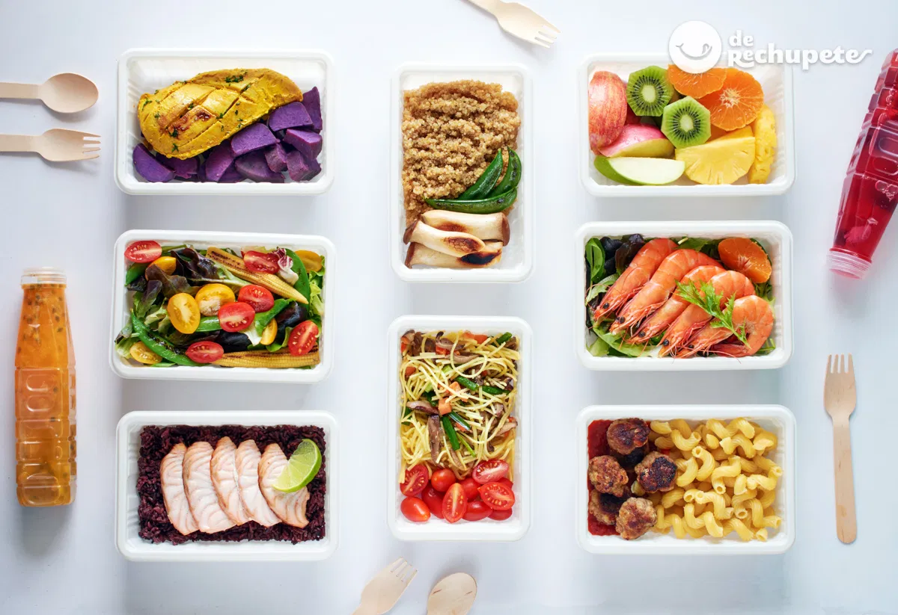
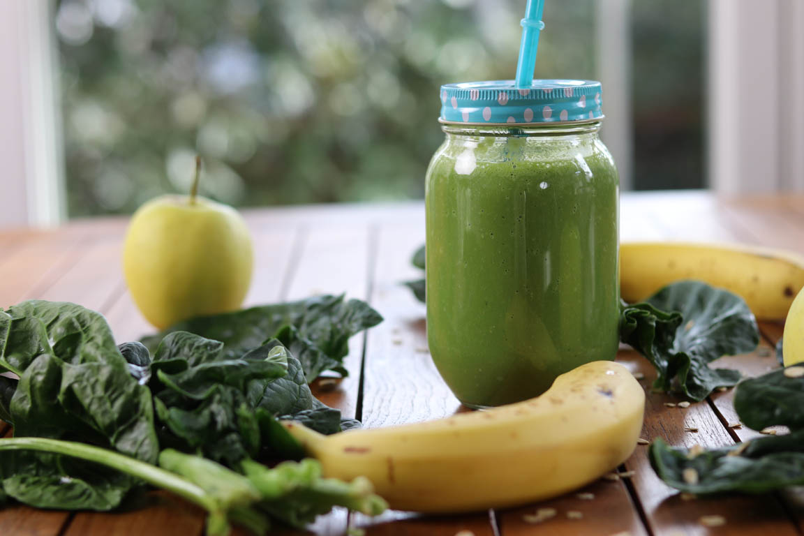

Aprender sobre Vida Saludable
Artículos, consejos y recetas para una vida más nutritiva y equilibrada.

Artículo
Los beneficios de una dieta balanceada
Descubre cómo una dieta equilibrada puede mejorar tu salud y bienestar general.

Consejo
Hidratación: clave para el rendimiento
Aprende por qué mantenerse hidratado es esencial para tu energía y concentración.

Receta
Ensalada de Quinoa con Vegetales
Una receta nutritiva y fácil de preparar para tus comidas diarias.

Artículo
El poder de las proteínas vegetales
Explora los beneficios de incorporar proteínas vegetales en tu dieta.

Consejo
Planificación de comidas (Meal Prep)
Consejos prácticos para organizar tus comidas y ahorrar tiempo.

Receta
Batido Verde Energizante
Una bebida saludable para comenzar el día con energía.